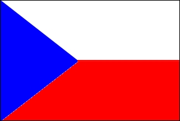
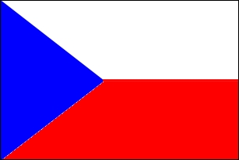

Przelicznik walut:
Przelicznik z dnia 04/10/2016: KCZ=JPY*0,2362, JPY=KCZ*4,2328Podaj kwotę w danej walucie:
KRÓTKIE INFO O: JAPONII CZECHACH.
 Powierzchnia: 377 921km2, Ludność: 126,5 mln osób
Powierzchnia: 78 866km2, Ludność: 126,5 mln osób
Powierzchnia: 377 921km2, Ludność: 126,5 mln osób
Powierzchnia: 78 866km2, Ludność: 126,5 mln osób